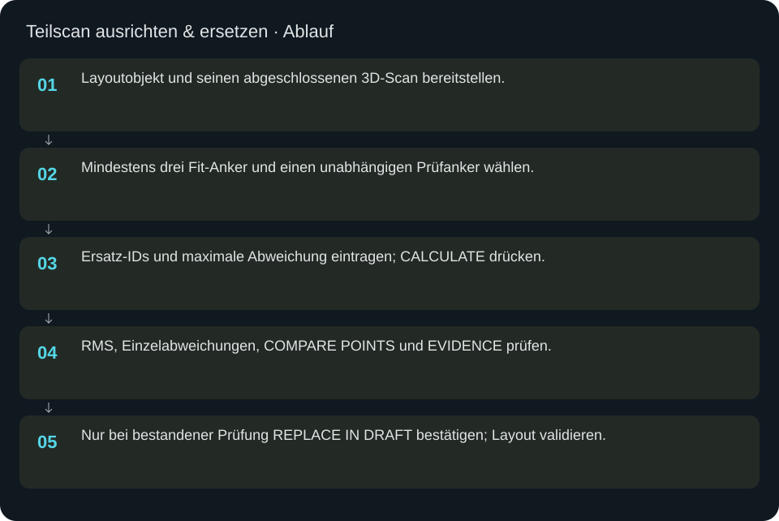
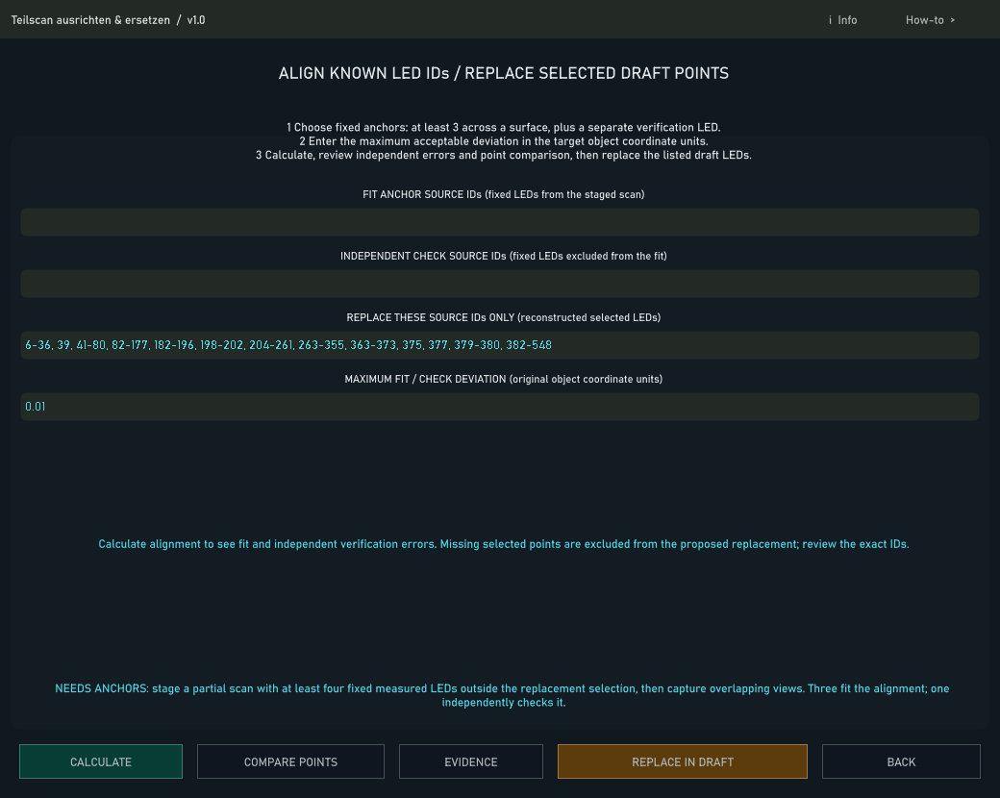

Teilscan ausrichten & ersetzen
Neue Messpunkte anhand fester Anker ausrichten und ausschließlich ausdrücklich akzeptierte IDs im Entwurf ersetzen.
In welcher Reihenfolge?
- Layoutobjekt und seinen abgeschlossenen 3D-Scan bereitstellen.
- Mindestens drei Fit-Anker und einen unabhängigen Prüfanker wählen.
- Ersatz-IDs und maximale Abweichung eintragen; CALCULATE drücken.
- RMS, Einzelabweichungen, COMPARE POINTS und EVIDENCE prüfen.
- Nur bei bestandener Prüfung REPLACE IN DRAFT bestätigen; Layout validieren.


Schritt für Schritt
Voraussetzungen
Mindestens vier bereits vermessene feste LEDs außerhalb des Ersatzbereichs dienen als Anker: drei für die Anpassung und mindestens eine für eine unabhängige Kontrolle. Die Zahlenbeispiele sind kein gültiger Satz für jedes Panel. Anker müssen tatsächlich in alter Geometrie und neuem Scan vorhanden sein.
Ergebnis lesen
PASS bedeutet, dass Fit- und Prüfabweichung die eingestellte Grenze einhalten. RMS fasst Abweichungen zusammen, worst zeigt den schlechtesten Punkt. COMPARE POINTS zeigt alte/neue Koordinaten und Verschiebung pro Ersatz-ID. EVIDENCE zeigt den Vorschlag im Detail. Ein zu großzügiger Grenzwert macht schlechte Messungen nicht gut.
Ersetzen und zurücknehmen
REPLACE IN DRAFT fordert eine ausdrückliche Bestätigung der gelisteten IDs. Anker und übrige LEDs behalten Position und Identität. Bei veränderten Eingaben erneut CALCULATE verwenden. Die Änderung ist im Layout mit Undo rücknehmbar; die Originalscans bleiben erhalten. Die aktive Ausgabe wird dadurch nicht automatisch umgeschaltet.
Eingaben & Beispiele
| Feld | Bedeutung | Beispiel |
|---|---|---|
fit_ids | Mindestens drei feste, räumlich verteilte Quell-IDs außerhalb des Ersatzbereichs. | 0,20,40 |
check_ids | Separater fester Prüfanker, nicht beim Fit verwendet. | 60 |
accepted_ids | Nur rekonstruierte ausgewählte IDs, deren Position ersetzt werden soll. | 80-90 |
max_error | Zulässige Abweichung in den Koordinateneinheiten des Zielobjekts; begründet wählen. | 0.01 |
Numerische Eingaben verwenden einen Punkt als Dezimaltrennzeichen. IPs, Pfade, Quellstarts und Universen zuerst mit der tatsächlichen Installation vergleichen.
Woran erkenne ich Erfolg?
Die erwartete Ansicht öffnet, Status und Vorschau entsprechen der gewählten Aktion, und es erscheint kein Fehler. Änderungen beim nächsten Laden beziehungsweise im Live-Status erneut lesen. Ein erfolgreicher Bildschirmtest beweist weder physische LED-Ausgabe noch korrekte Kameramessung.
Quellennachweis
Dateipfade im Projekt-Repository; die Onlinehilfe gibt keinen allgemeinen Dateisystemzugriff frei.
pixelblaze_mapper/scan_registration_ui.pypixelblaze_mapper/scan_registration.py
Dialog: /project1/guided_scan/registration_panel